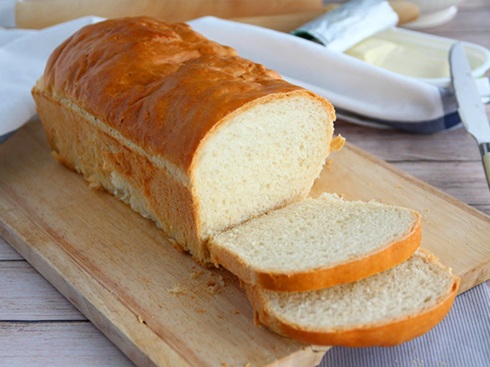

Salgados · Massas fritas/assadas
Pão de fôrma

Ingredientes
- 5 1/2 a 6 1/2 xícaras de farinha de trigo
- 2 colheres (chá) de sal
- 2 colheres (sopa) de manteiga
- 1 tablete (15 g) de fermento para pão
- 1 3/4 xícara de água morna
- Farinha de trigo para polvilhar
- Manteiga para untar
Modo de preparo
- Na tigela, peneire a farinha com o sal. Adicione a manteiga e esfarele. Dissolva o fermento na água morna.
- Junte o fermento à farinha de uma vez e misture com colher de pau, acrescentando farinha se necessário.
- Sove na superfície enfarinhada por cerca de 10 minutos até ficar lisa e elástica.
- Forme um bola, coloque em tigela untada, cubra com saco plástico untado e deixe crescer até dobrar de volume.
- Despeje na superfície, pressione para eliminar bolhas de ar e sove um pouco mais.
- Abra em oval da largura da fôrma, enrole, dobre as pontas e coloque na fôrma de 900 g untada.
- Cubra e deixe crescer até dobrar. Pré-aqueça o forno a 230 °C.
- Asse 30–40 minutos até dourar. O fundo deve soar oco ao bater. Deixe esfriar na grade.
Observação
Congelamento: embrulhe em alumínio ou filme, saco sem ar; descongele 2 h em temperatura ambiente.